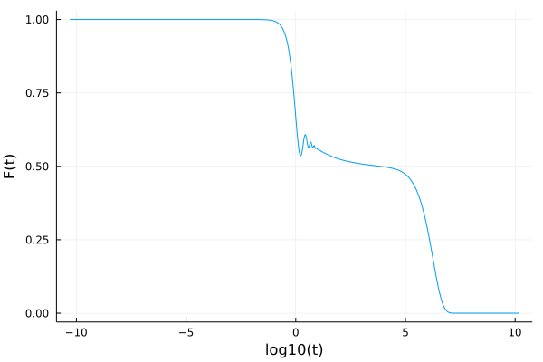

ModeCouplingTheory.jl
This package provides a generic and fast solver of mode-coupling theory-like integrodifferential equations. It uses the algorithm outlined in Fuchs et al. to solve equations of the form
\[\alpha \ddot{F}(t) + \beta \dot{F}(t) + \gamma F(t) + \delta + \int_0^t d\tau K(t-\tau)\dot{F}(\tau) = 0\]
in which $\alpha$, $\beta$, $\gamma$, and $\delta$ are coefficients, and $K(t) = K(F(t), t)$. This package exports some commonly used memory kernels, but it is straightforward to define your own. The solver is differentiable and works for scalar- and vector-valued functions $F(t)$.
Installation
To install the package run:
import Pkg
Pkg.add("ModeCouplingTheory")Example
We can define one of the predefined memory kernels
julia> using ModeCouplingTheory
julia> ν = 3.999
3.999
julia> kernel = SchematicF2Kernel(ν)
SchematicF2Kernel{Float64}(3.999)This kernel evaluates $K(t)=\nu F(t)^2$.
We can now define the equation we want to solve as follows:
julia> α = 1.0; β = 0.0; γ = 1.0; δ = 0.0; F0 = 1.0; ∂F0 = 0.0;
julia> equation = MemoryEquation(α, β, γ, δ, F0, ∂F0, kernel)
Linear MCT equation object:
α F̈ + β Ḟ + γF + δ + ∫K(τ)Ḟ(t-τ) = 0
in which α is a Float64,
β is a Float64,
γ is a Float64,
δ is a Float64,
and K(t) is a SchematicF2Kernel{Float64}.and jula solver:
julia> solver = TimeDoublingSolver()Now we can solve the equation by calling solve:
julia> using Plots
julia> sol = solve(equation, solver);
julia> t = get_t(sol)
julia> F = get_F(sol)
julia> plot(log10.(t), F)
Full copy-pastable example:
using ModeCouplingTheory, Plots
ν = 3.999
α = 1.0; β = 0.0; γ = 1.0; δ = 0.0; F0 = 1.0; ∂F0 = 0.0;
kernel = SchematicF2Kernel(ν)
problem = MemoryEquation(α, β, γ, δ, F0, ∂F0, kernel)
solver = TimeDoublingSolver()
sol = solve(problem, solver);
t = get_t(sol)
F = get_F(sol)
plot(log10.(t), F)Contributing
Please open an issue if anything is unclear in the documentation, if any unexpected errors arise or for feature requests (such as additional kernels). Pull requests are of course also welcome.